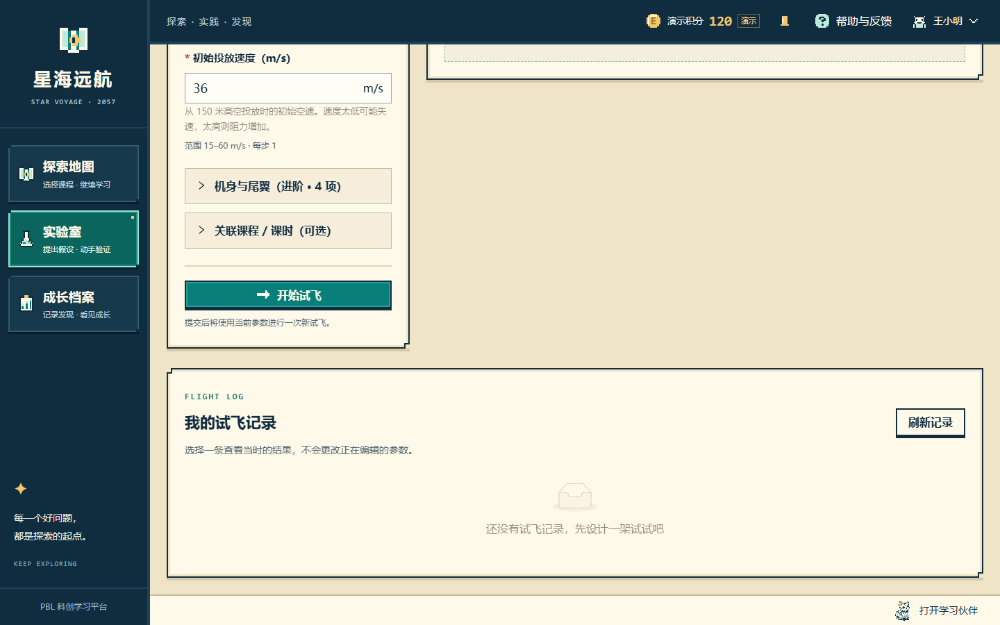
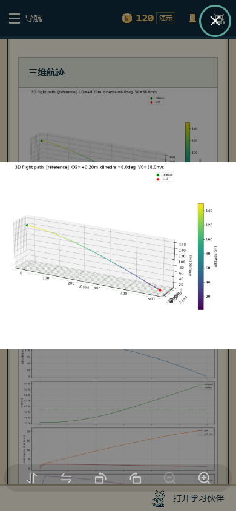
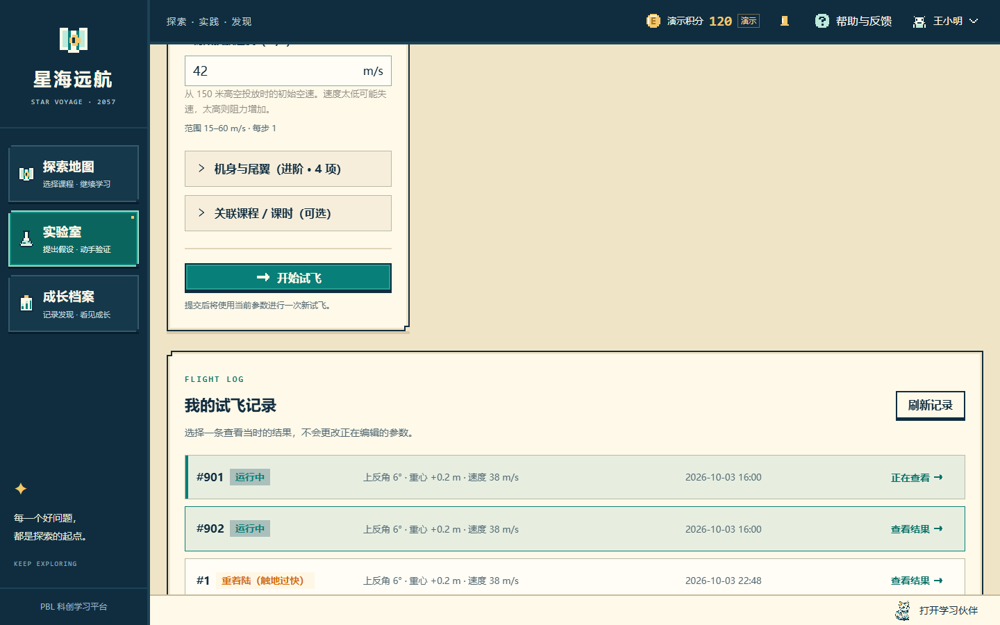
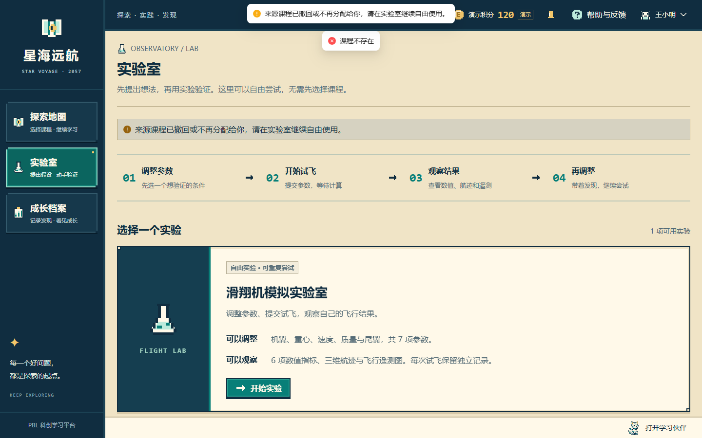
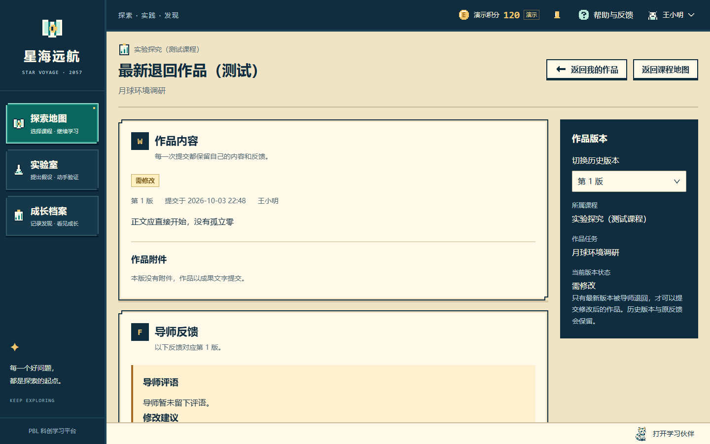

实验选择 · 首屏 · 真实页面
只有已注册的滑翔机实验。使用隔离账号，无正式教学内容。
沿用「晴空观测站」。32 张本地 Edge 实际截图，使用隔离临时 SQLite 与合成教学内容；不代表正式课程，未改动开发数据库或历史截图。真实参考引擎结果、故障注入与受控运行状态分别标注。首屏从顶部截取，内容区为操作、滚动后的视口；所有图片均未裁切或修图。
交付说明 · 第四轮首页与地图只有已注册的滑翔机实验。使用隔离账号，无正式教学内容。
七项原参数全部保留；进阶四项折叠并预挂载，提交时不遗漏。
四项机身与尾翼参数展开，数值随后折叠提交，七项映射实际通过验证。
隔离账号第一次进入实验室，尚未提交任何试飞。

测试绑定精确到第二张知识卡片；固定来源可返回原阶段、原卡片。
运行状态通过浏览器路由注入，以稳定验收布局；不代表真实引擎的运行耗时。
记录 #1：重着陆。11.94 s、506.1 m 等数值均来自未修改的 reference 引擎。
科学结果原图，无像素化滤镜或美术替换，可放大查看。
键盘打开，支持缩放，Escape 关闭；弹层位于顶栏和伙伴之上。

原生按钮可用键盘进入，同条重开会重新读取，编辑参数不被历史值覆盖。
只阻断航迹请求，真实数值和遥测图保留。重试已验证恢复，未重复创建试飞。
运行响应注入，浏览器时钟推进 300 秒；切换记录与新试飞均清除旧超时。

仅在临时 SQLite 撤回测试课程，返回实验室并解释原因。

正文前没有孤立 0，最新版本仍可修改，已有新版的历史退回版仍标已修改。
